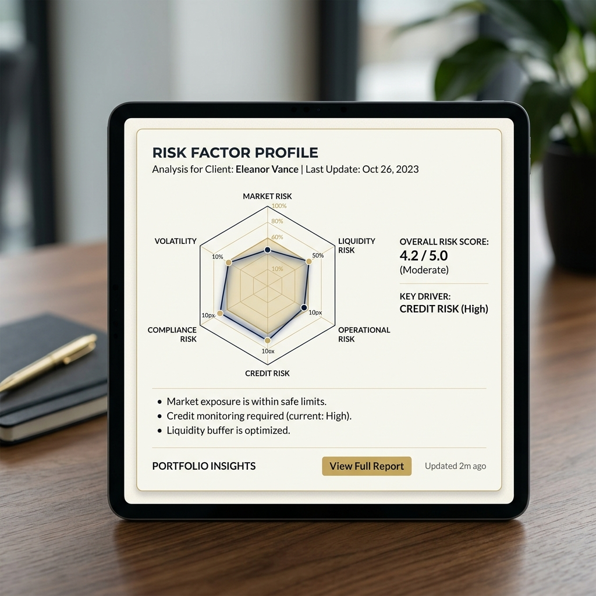

Expert analysts reject AI without reasoning shown. They'd rather spend hours re-validating than trust a black-box score. Building trust required showing work.
Act I — A Scene
David was reviewing a Series B software company for acquisition. Revenue growth looked strong on the surface — 40% YoY. But the model flagged a concern: 65% of revenue came from one customer. Red flag. The AI said the risk was "Medium-High" based on historical patterns. The default rate for companies with this revenue concentration was 8× higher than the portfolio median.
David had 20 years of experience. His instinct said the AI was wrong about this particular company — the customer was a multinational that had demonstrated stability, and the company was actively diversifying. But the AI showed him no reasoning. Just a flag and a score. So David did what he always did when he didn't understand the model: he re-analyzed the data himself. Three hours of manual work to validate what the AI had already calculated. The AI had been right. But it had cost him his evening because it hadn't shown its work.
Act II — The World
Private equity due diligence is judgment work. An analyst reads financial statements, competitive positioning, management quality, market trends. They build a hypothesis: "This company will do well" or "This is high-risk." Then they look for data that challenges their hypothesis. If the AI tells them they're wrong, they need to *understand why* before they'll change their mind.
The platform we were building used machine learning to analyze companies at scale — comparing them to industry peers, identifying risk factor correlations, flagging patterns that historically preceded defaults. The analysis was sophisticated and often accurate. But analysts treated it the way David did: as a hypothesis generator, not a trusted advisor. When the AI flagged something, they'd verify it independently. When the AI cleared something, they'd still worry. The system wasn't reducing decision time; it was creating an extra verification step.
Role: Lead product designer for PE analysis suite · Designed AI analyst assistant module · 2019–2021 · Deployed to 150+ analysts across 8 firms · NDA
Act III — The Encounter
I shadowed a deal team through a full evaluation cycle. What became clear: they weren't rejecting the AI. They were ignoring it because they couldn't verify it. When David flagged customer concentration, I asked: "If the system showed you *why* it was concerned, would that change how you use it?" He said: "Not if I disagree with the logic. But if I could see the logic and it made sense, I'd trust my own judgment less and the system's judgment more."
The insight was stark: Analysts don't trust algorithms. Analysts trust reasoning they can verify. Transparency wasn't optional. It was foundational.
Experts don't fear automation. They fear being wrong. Show them your reasoning so they can verify it. Then they own the decision—algorithm or gut.

Act IV — The Work
I redesigned the entire analysis output from conclusions to reasoning chains. Every risk flag now showed its logic: "Customer concentration: 65% of revenue from 1 customer. Portfolio median: 15%. Companies with >50% concentration have 8× higher 5-year default risk. This company's diversification plan: Active (3 new customers in pipeline). Analyst assessment opportunity: Does this context change the risk profile?"
Fig 2. Abstracting the "Comparative Context & Respectful Override" architecture.
I added peer-comparative analysis to every metric. A metric wasn't evaluated in isolation; it was shown against the peer distribution.
Key insight: SaaS company with 8% growth? Shown against 25th/50th/75th percentiles for SaaS. Immediately clear whether it was unusual or typical. External reference points made the AI's concerns concrete and verifiable — not an algorithm's opinion, but an observation against data the analyst could cross-check.
I designed an override interface that was respectful. For any flagged concern, an analyst could click "I contextualize this differently" and provide their own reasoning. That feedback improved the model, but more importantly, it made analysts feel respected.
The deepest design decision: I made risk factors visible as weighted components rather than a single aggregated score:
- Moderate revenue growth → 8% impact on risk
- High customer concentration → 35% impact on risk
- Recent leadership stability → -10% impact on risk
- Net risk: Medium
Disagreement became a conversation about methodology, not a mystery. That's the difference between a tool experts ignore and one they adopt.
Act V — The Turn
Six months after shipping the transparent reasoning model, the metrics shifted. Analysts spent 60% less time verifying the AI's analyses — not because they trusted blindly, but because they could understand the logic quickly and decide whether it was sound.
Most importantly, analysts started using the system proactively ("What else should I look at on this company?") rather than defensively ("Let me verify this flag"). Not because the algorithm was smarter. Because the analysts could now use it intelligently.
Act VI — The Implication
Experts don’t want automation. They want amplification.
They want the algorithm to do what they’re bad at (processing scale, spotting patterns across thousands of data points) and leave room for what they’re good at (judgment, context, exceptions, gut calls).
The design principle: always show your work.
- Transparent reasoning
- Comparative context
- Easy override
- Respectful disagreement